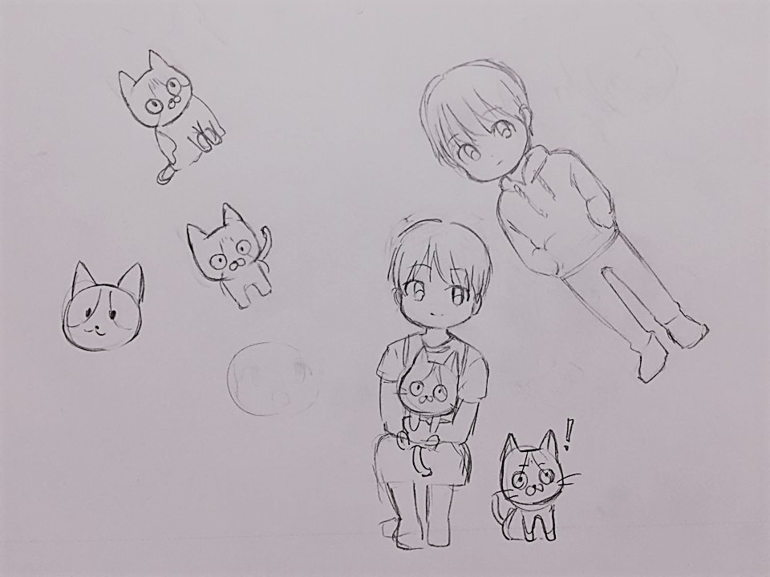
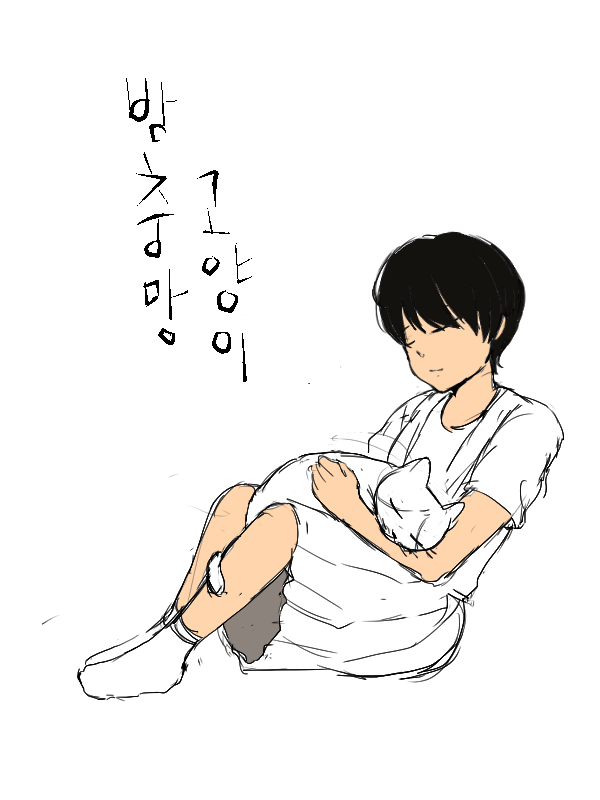

주제 리서치 및 기획
일러스트를 이용해 원페이지 스크롤 제작.
반려 동물을 키우는 일상툰
<캐릭터 스케치>
<스토리>
혼자 자취를 시작한 대학생이 주위 환경에 적응하지 못하고 겉돌 때 고양이를 만나게 된다. 자꾸만 집주변을 맴도는 고양이. 키울만한 여건이 안되어 무시하려고 하지만 창문 방충망에 붙어서 떠나질 않는다.
그래서 이 만화의 제목은 방충망 고양이다.
<표지 이미지>
네이버 웹툰의 호랑 작가처럼 작품 중간에 노래가 나오거나 가벼운 움직임을 넣을 것이다.